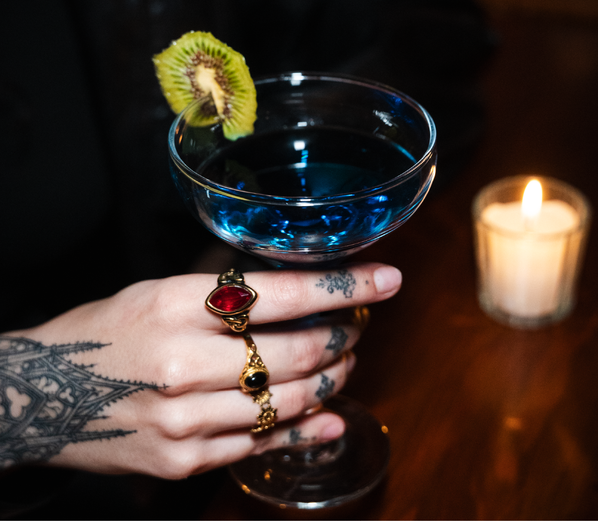
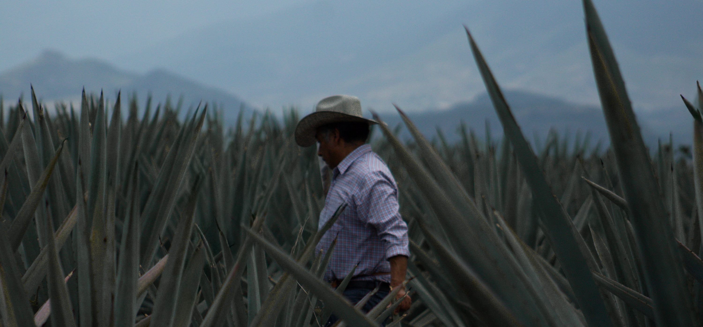
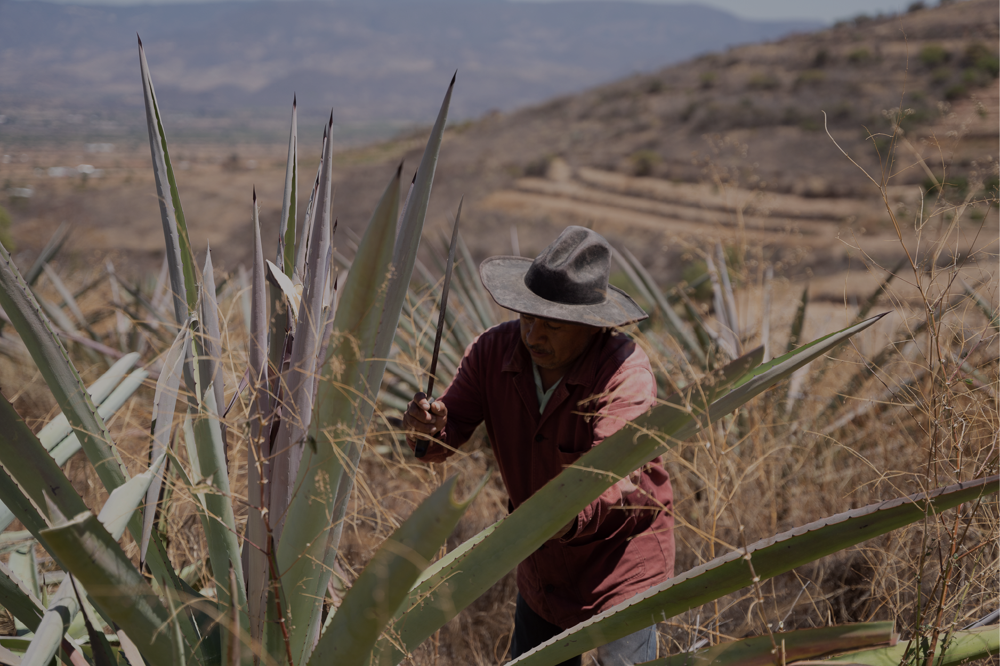
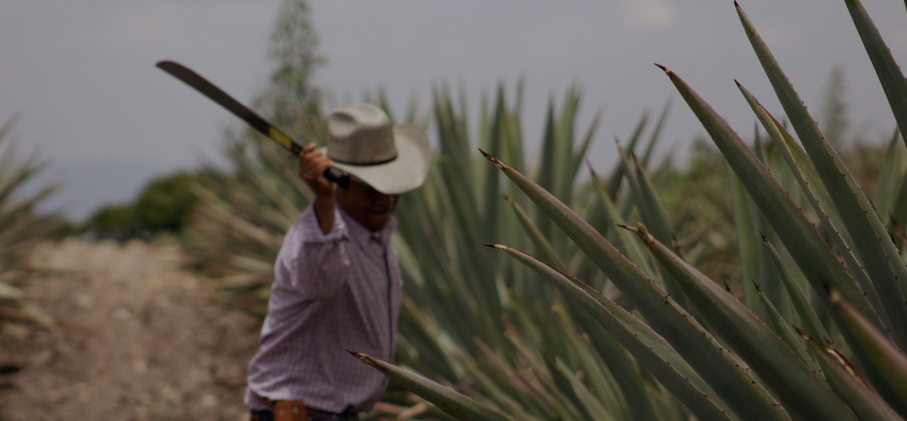
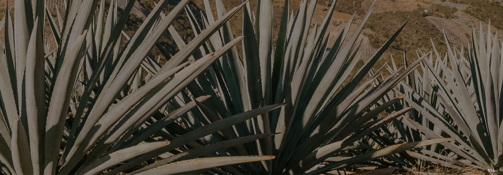
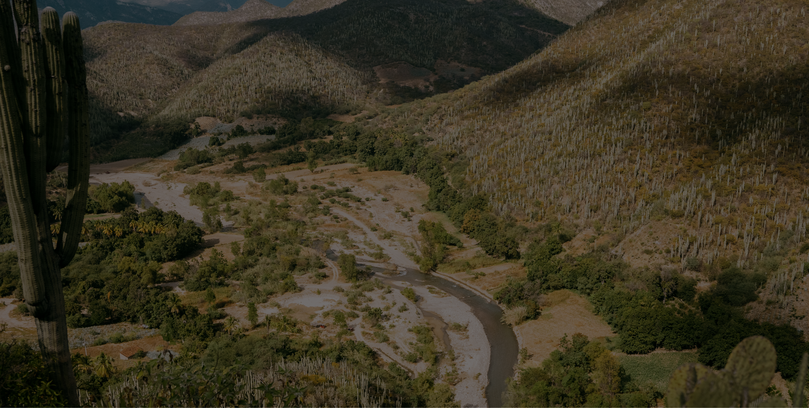
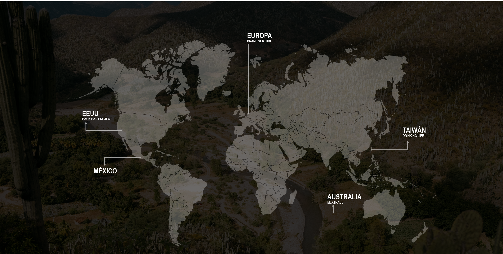
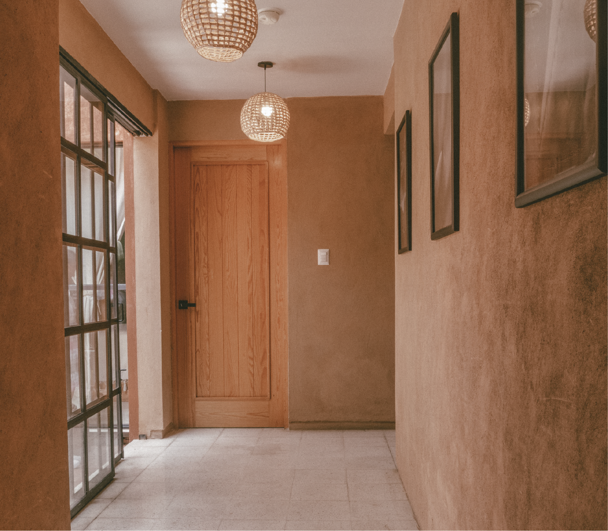

Mezcalogía
Un espacio donde el mezcal cobra vida a través de catas, coctelería de autor y una cuidada selección de destilados artesanales.
Descubrir más
Un legado que sigue vivo.
Toda historia tiene un origen. La nuestra comenzó en Matatlán, Oaxaca, donde el conocimiento, la tierra y el tiempo han sido parte de una misma tradición durante generaciones.



Casa Cortés nació en 2008 para honrar la memoria, el conocimiento y el legado de una familia cuya relación con el mezcal se ha construido a lo largo de casi dos siglos.
Inspirados por nuestras raíces zapotecas y guiados por un profundo respeto por el origen, preservamos una tradición que continúa viva en cada comunidad, en cada palenque y en cada botella.
Lo que comienza en la tierra encuentra su expresión en mezcales que llevan el espíritu de Oaxaca.

Hoy, Casa Cortés comparte la riqueza del mezcal oaxaqueño en diversos países.

Más allá de cada botella, Casa Cortés crea espacios que invitan a descubrir el mezcal desde una nueva perspectiva.

Un espacio donde el mezcal cobra vida a través de catas, coctelería de autor y una cuidada selección de destilados artesanales.
Descubrir más
Hospédate en el corazón de Oaxaca, en un espacio diseñado para brindar comodidad, descanso y una experiencia auténtica.
Descubrir más